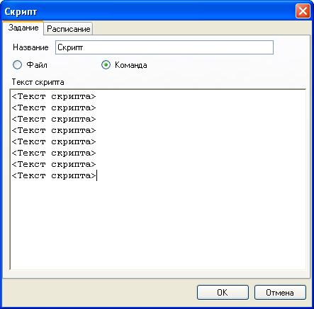

Запуск командного скрипта
Задания данного вида предназначены для запуска скриптов командной оболочки Windows. Программа может осуществить запуск как уже существующего командного файла с расширением *.bat, а также скрипта заданного в настройках задания.
Чтобы создать задание на запуск скрипта необходимо в главном меню программы выбрать Добавить — Командный скрипт. Затем появиться окно, в котором необходимо ввести настройки для задания.

На вкладке Задание задаются следующие настройки:
Название
— наименование задания.
Файл — указывает, что
программа должна запускать уже имеющийся командный файл, который
необходимо выбрать в поле ввода ниже.
Команда —
указывает, что программа должна выполнить скрипт, введенный в поле
ввода Текст скрипта.